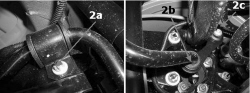

4420CA CHECKS ON REAR STABILIZER BAR
- Path
- Test > 44 SUSPENSION AND WHEELS > 4420 REAR SUSPENSION > 4420C REAR SUSPENSION STABILIZER BAR/LINKS > 4420CA CHECKS ON REAR STABILIZER BAR
- Kind
- test / check procedure
- Applies to
- all engines; all production periods
- Interactive page
- https://sloeber94.github.io/elrnDB-fCrm/en/#/194002296
Applies to: all engines; all production periods
Position the vehicle on a two column lift.
Check that the paint is not worn at the contact points between the bar and the crossmember.
Visually inspect that the yield point type bolts fastening the anti-roll bar to the rear frame (2a), the connecting rod to the bar (2b) and the connecting rod to the steering knuckle (2c) have not loosened.
Type of fastening | Component | Torque (daNm) + Angle (°) | |
|---|---|---|---|
2a | Bolt M8 | Rear frame | 2,5 + 30° |
2b | Nut M10 | Anti-roll bar | 4,5 + 60° |
2c | Nut M10 | Steering knuckle | 4,5 + 60° |
